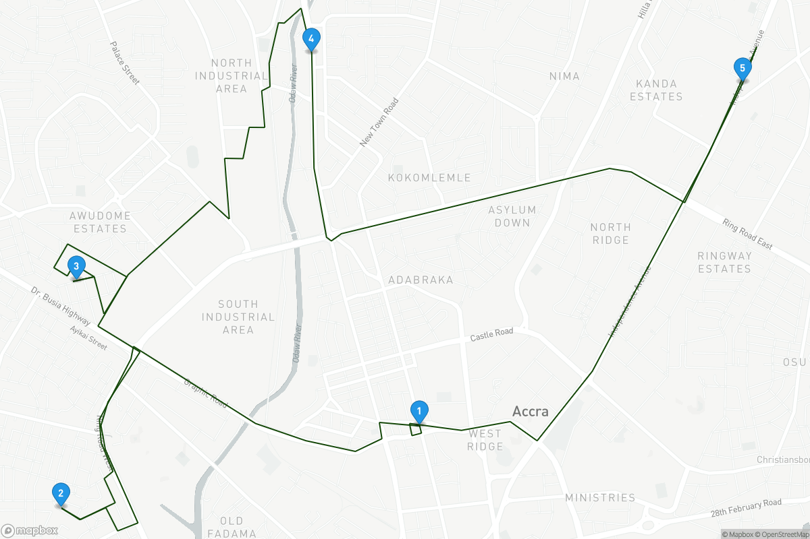

mapboxapi supports the use of Mapbox’s Directions, Isochrone, Matrix, and Optimization APIs, and are designed to be incorporated into R analysis workflows using sf, Shiny, and other packages. Navigation output should be visualized on a Mapbox map; see the vignette on mapping with mapboxapi for how to accomplish this in R.
Routing with mapboxapi
The mb_directions() function computes a route between an
origin and destination, or optionally along multiple points in an sf
object. Output options include the route or the route split by route
legs as an sf linestring, or the full routing output as an R list for
additional applications.
library(mapboxapi)
library(leaflet)
my_route <- mb_directions(
origin = "10 Avenue de Wagram, 75008 Paris France",
destination = "59 Rue de Tocqueville, 75017 Paris France",
profile = "cycling",
steps = TRUE,
language = "fr"
)
leaflet(my_route) %>%
addMapboxTiles(style_id = "light-v9",
username = "mapbox") %>%
addPolylines()Instructions are available in a variety of different languages:
my_route$instruction## [1] "Se diriger vers le nord-est"
## [2] "Tourner à gauche"
## [3] "Tourner à droite sur l’avenue de Wagram"
## [4] "Continuer tout droit pour rester sur l’avenue de Wagram"
## [5] "Tourner à droite sur la rue du Faubourg Saint-Honoré"
## [6] "Tourner à gauche sur la place des Ternes"
## [7] "Tourner à droite sur la place des Ternes"
## [8] "Tourner à droite sur l’avenue de Wagram"
## [9] "Tourner légèrement à droite sur la rue Cardinet"
## [10] "Tourner à gauche sur la rue de Tocqueville"
## [11] "Tourner à gauche sur l’impasse Léger"
## [12] "Tourner à droite"
## [13] "Vous êtes arrivé à votre destination"Optimized routes along multiple coordinates are available with the
mb_optimized_route() function:
library(sf)
to_visit <- data.frame(
X = c(-0.209307, -0.185875, -0.216877, -0.233511, -0.234541),
Y = c(5.556019, 5.58031, 5.582528, 5.566771, 5.550209)
) %>%
st_as_sf(coords = c("X", "Y"), crs = 4326)
optimized_route <- mb_optimized_route(to_visit,
profile = "driving-traffic")
optimized_map <- static_mapbox(
style_id = "light-v9",
username = "mapbox",
overlay_sf = optimized_route$route,
overlay_style = list(
stroke = "#144708"
),
overlay_markers = prep_overlay_markers(
data = optimized_route$waypoints,
marker_type = "pin-l",
label = optimized_route$waypoints$waypoint_index,
color = "144708"
),
height = 800,
width = 1200
)
optimized_map
Isochrones and travel-time matrices
The Mapbox Isochrone API returns polygons representing
isochrones, or areas reachable within a given travel time,
around a given location. mapboxapi returns Mapbox
isochrones as sf objects for visualization and analysis. Input locations
can be coordinate pairs, addresses, or sf objects themselves. The
example below returns three walking isochrones around The Kremlin in
Moscow; users can also optionally get street network-aware distances by
using the distance argument instead of time
and supplying a vector of distances in meters.
library(mapdeck)
isochrones <- mb_isochrone("The Kremlin, Moscow Russia",
time = c(4, 8, 12),
profile = "walking")
mapdeck(style = mapdeck_style("light")) %>%
add_polygon(data = isochrones,
fill_colour = "time",
fill_opacity = 0.5,
legend = TRUE) Travel-time matrices are available in the mb_matrix()
function. Requests are rate-limited internally to conform with Mapbox
API limits; I’ve made internal modifications for larger-scale matrices
but very large many-to-many matrices (more than 25 source coordinates
and 25 destination coordinates) are not yet supported.
mb_matrix() returns an R matrix object where each cell
represents the travel time between an origin and destination pair.
Coordinate pairs, addresses, and sf objects can be used as inputs. If sf
polygons are used as the input, mb_matrix() will calculate
travel times based on the polygon centroids, which should be
double-checked for possible routing errors.
library(tigris)
philly_tracts <- tracts("PA", "Philadelphia", cb = TRUE, class = "sf")
downtown_philly <- mb_geocode("Philadelphia City Hall, Philadelphia PA")
time_to_downtown <- mb_matrix(philly_tracts, downtown_philly)
philly_tracts$time <- time_to_downtown
mapdeck(style = mapdeck_style("light")) %>%
add_polygon(data = philly_tracts,
fill_colour = "time",
fill_opacity = 0.6,
legend = TRUE)